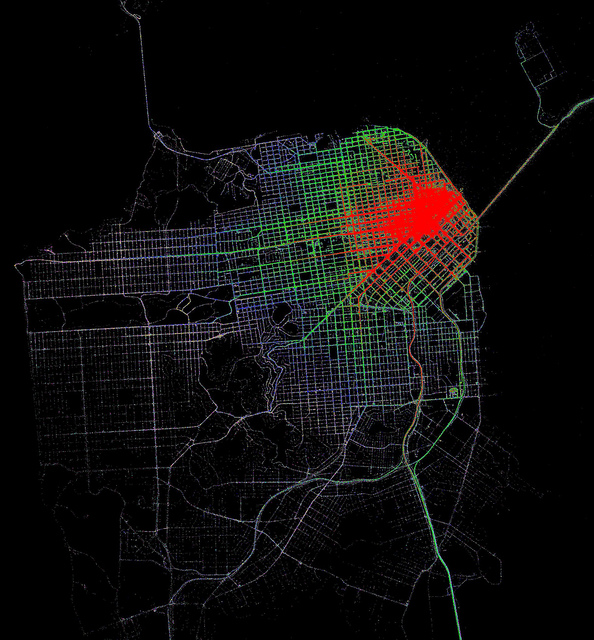
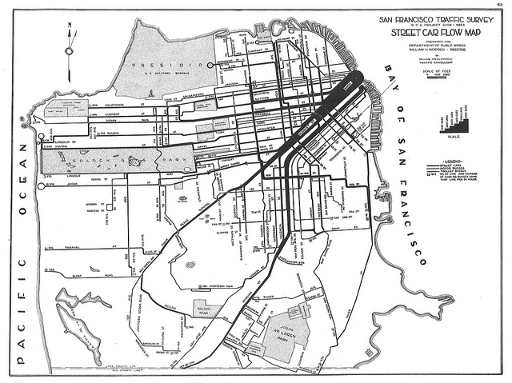
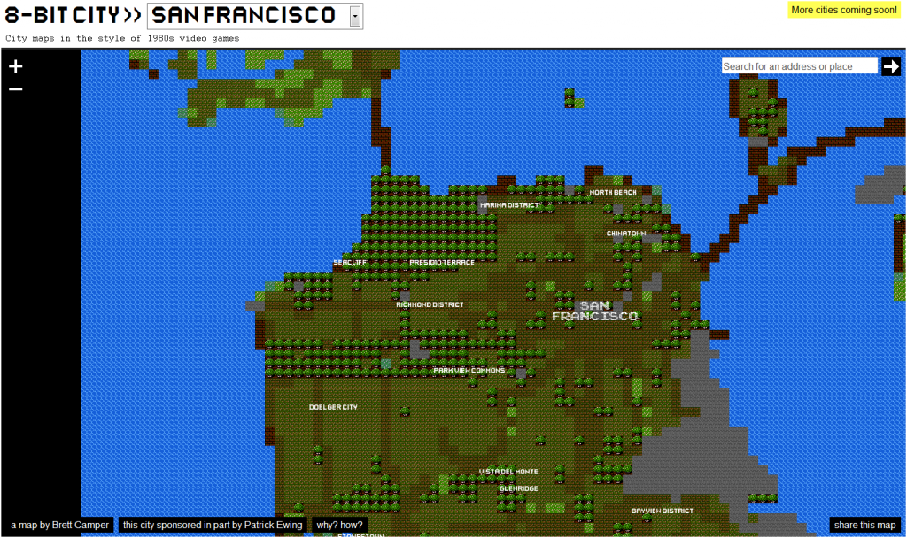
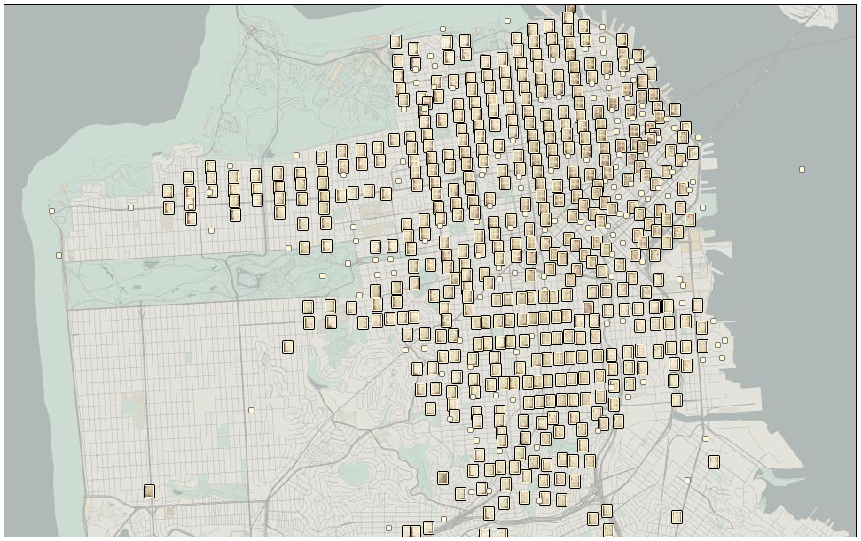
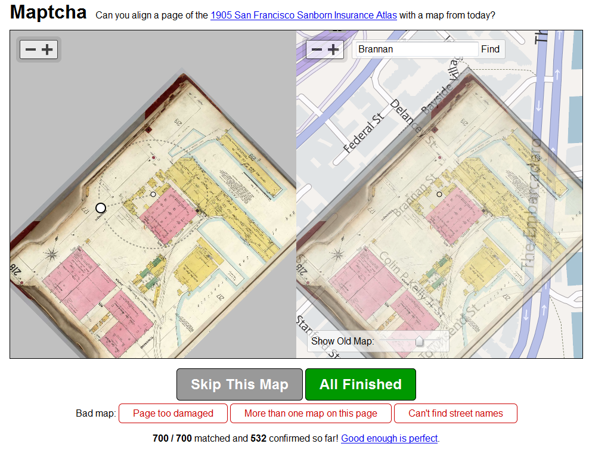
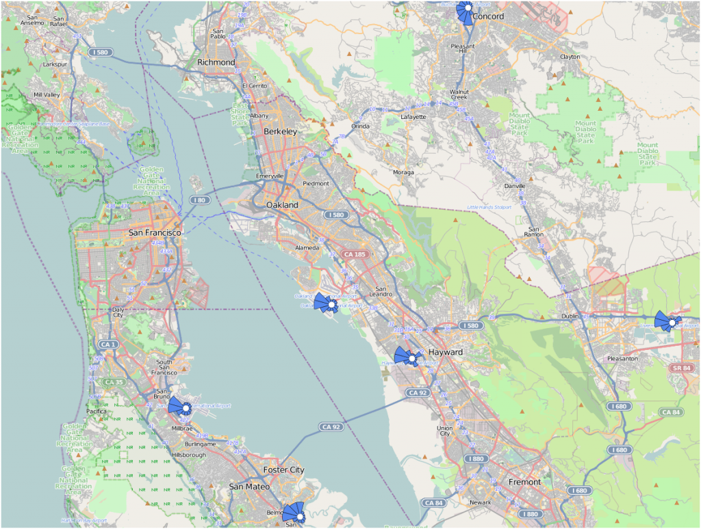
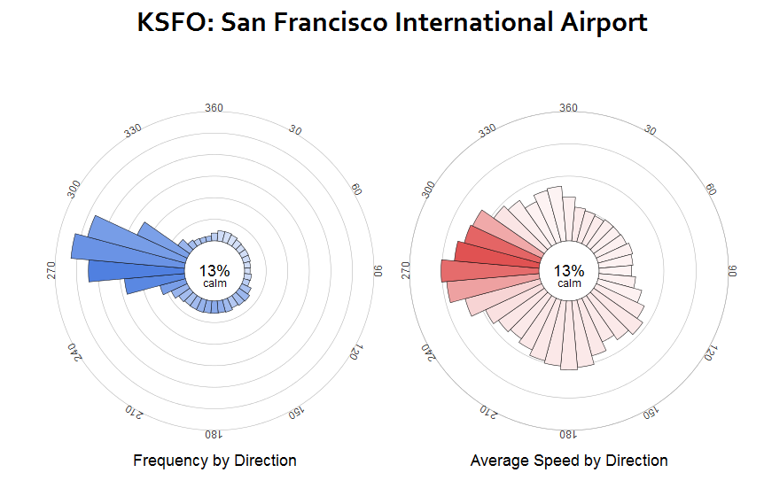
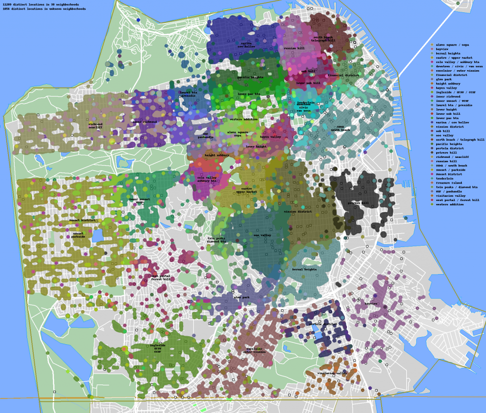
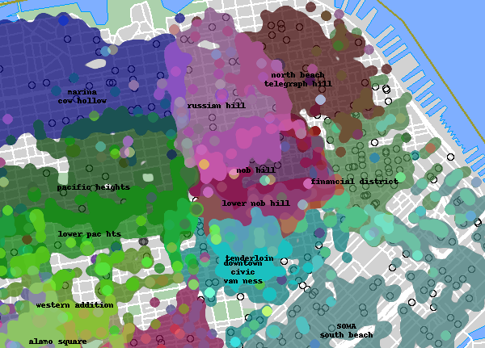

As a follow-up to the previous post, here’s a gallery of various representations of San Francisco.


This first set comes from Eric Fischer, who mapped accessibility in San Francisco by taxi, based on data from Cabspotting and inspired by an earlier survey that measured time to travel via streetcar. Data collection of taxi GPS information such as that provided via Cabspotting and realtime bus information provided by public transportation agencies like the San Francisco Municipal Transportation Agency provide researchers and artists with a wealth of data (some might say an embarrassment of data) with which to examine and visualize modern urban transportation networks.

A decidedly different rendition of Baghdad by the Bay can be found at 8-Bit Cities. It’s not drawn by hand, rather Brett Camper has built a parser that analyzes OpenStreetMap data and summarizes it with a limited variety of Legend of Zelda-like tiles. The code paints with a purposefully broad brush, compressing the massive complexity of the city system into a few smudgy areas of tree and grass and pavement. The Bay Bridge and the Golden Gate are simple connections, likely to other levels, probably guarded by bosses.


Maptcha, by Mike Migurski, is yet another historical map-based project made possible by David Rumsey‘s insistence on making publicly available the enormous wealth of historical maps that he’s scanned. In this case, a lightweight georectification tool allows commons-based peer collaboration to be brought to bear in aligning highly-detailed historical maps of San Francisco from 1905 (meaning, before the earthquake) to modern city streets. Who knew that the Embarcadero was known as East Street?


Wind History is a very clean and data-rich map of reported wind conditions over time. I’ve grown more interested in wind patterns due to their relationship to early sea trade patterns (and, vice verse, early sea trade patterns as a proxy of changing historical environmental systems) and Minar’s representation of them allows one to watch the air masses shoot up the Central Valley and then buffet and eddy in the Bay Area’s microclimates.
Updated to add The Neighborhood Project, which attempts to map neighborhoods of San Francisco as they’re thought of by residents aggregated from polling and on-line advertisements:

